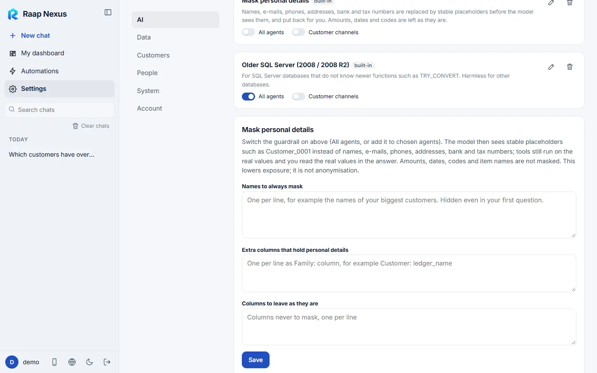
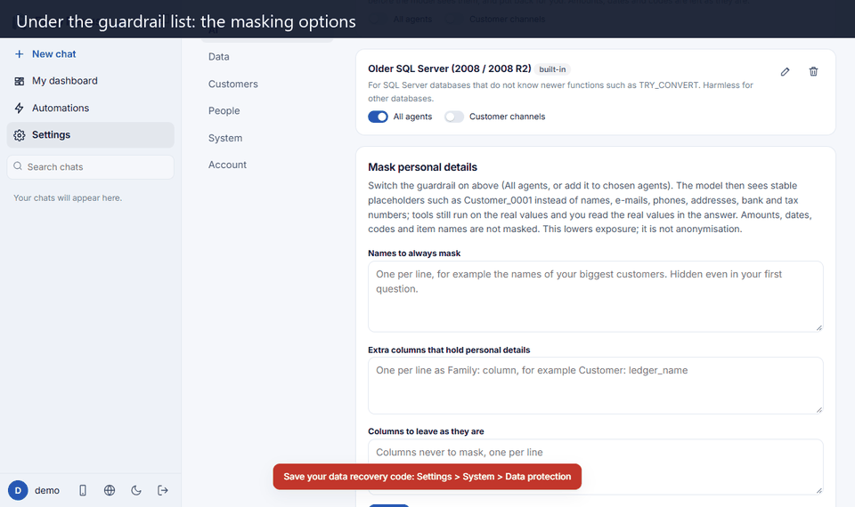

Raap Nexus
Raap NexusMask personal details
The AI sees stable stand-ins such as Customer_0001 instead of real names, e-mails, phones and bank or tax numbers. Your tools and your screen still use the real values.
What it does
The model reasons on relationships (this customer owes that much, these two invoices share a supplier), not on real names. So every identifying value is replaced, for the whole conversation, by a stable stand-in: Customer_0001, Supplier_0002, user0003@masked.example, Phone_0004. The same value always gets the same stand-in, so grouping, matching, duplicates and joins give the same answer as with the real data.
- Your tools still run on the real values: a query for Customer_0001 runs against the real customer.
- You read the real values in the answer, even when a stand-in arrives in pieces while the answer streams.
- The map of stand-ins stays on this computer, sealed with its key, so numbering survives a restart.
Turn it on
- Open Settings > AI > Guardrails.
- On Mask personal details, switch on All agents, or add the guardrail to chosen agents on their cards.
- Optionally adjust the lists below (the options are listed below) and press Save. Running chats pick the change up on their next message.


Options
| Option | Use it for |
|---|---|
| Names to always mask | One per line, for example the names of your biggest customers. Hidden even in your first question. |
| Extra columns that hold personal details | Your own column names, with the kind of value they hold: Customer: acct_holder, Phone: whatsapp_no. |
| Columns to leave as they are | A column that looks personal but the model needs. |
| Try it | Paste a few rows of data to see exactly what the model would receive. |
What is masked, and what is not
Masked: columns called customer, supplier, vendor, employee, email, phone, address, IBAN, tax id and similar (in JSON, tables, CSV and "Key: value" lines), then patterns anywhere: e-mail addresses, phone numbers with a country code, IBANs, card numbers, Emirates ID and SSN.
Not masked, on purpose: amounts, dates, quantities, account codes, item names, barcodes, cities and countries, because the model needs them to calculate and compare.
This lowers exposure. It is not anonymisation: amounts and dates can still identify a company to someone determined. A name typed in your very first message is only masked if it is in your list or has already appeared in data. It is never applied to replies to customers.
With Team mode
Every agent in a team works on masked values, and you see the real ones on the team card (Team mode).